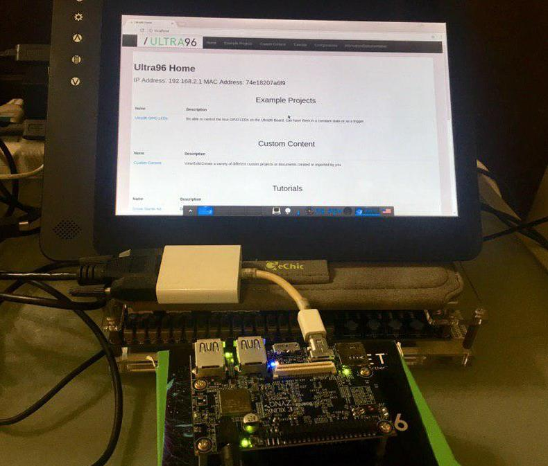
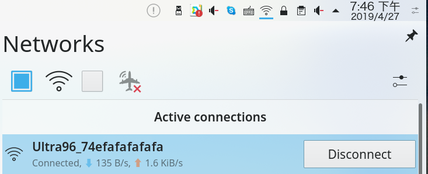
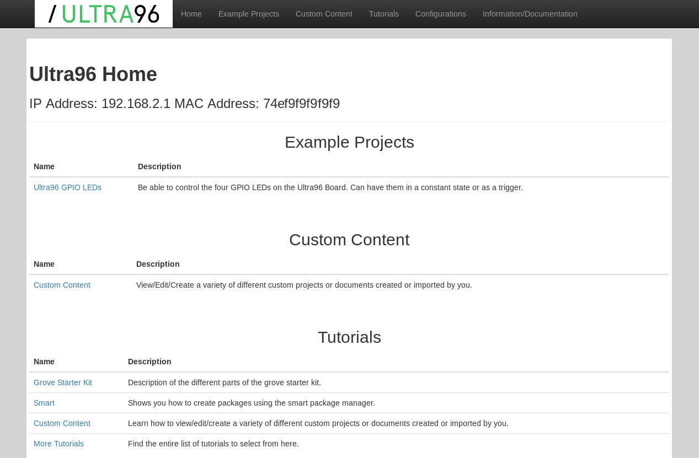
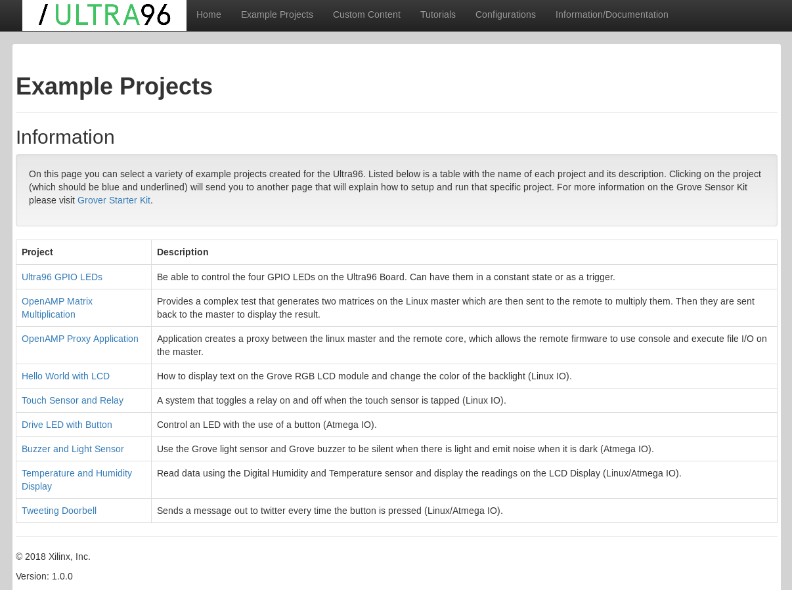
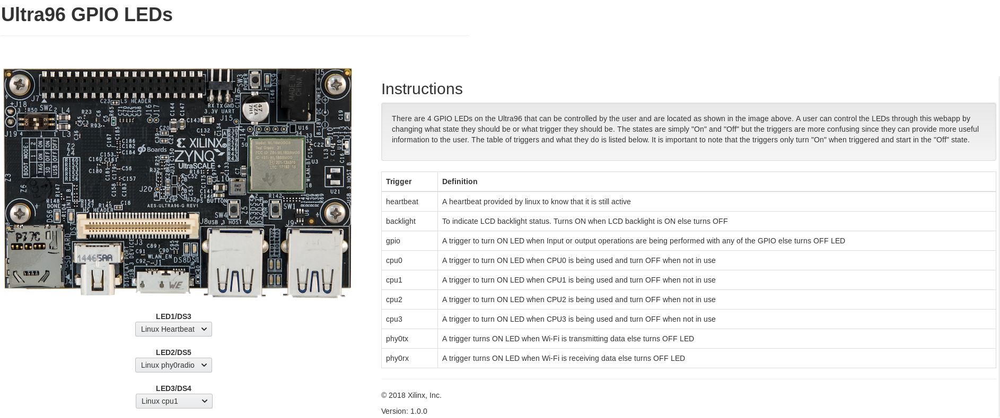

在 Ultra96 開發紀錄: 開箱文 一文中筆者紀錄了如何購買 Ultra96 開發板，而裡面付的 SD Card 其實已經有預先燒錄好一個可以開機的映像檔 (Image)。
就讓我們先插入 SD Card 並搭配 Ultra96 Getting Started Guide 來看看這塊板子吧。
開機與畫面顯示
當我們透過 Mini-DisplayPort 將資訊顯示到螢幕並點擊電源按鈕 SW3 讓機器開機後，一進系統會顯示 Enlightnment 的桌面環境，並預先開啟好了 Chromium 以及預設的網頁，裡面顯示著這台機器目前的 IP 以及 Mac Address

連上機器
你可以透過滑鼠搭配螢幕直接控制你的 Ultra96 ，或者是用你電腦的 Wifi 尋找 Ultra96 開頭的 SSID 並連線過去

連入這個 SSID 後，我們就可以在 Firefox/Chromium 上面輸入 IP: 192.168.2.1 來進入到這台機器的網頁，其結果如下:

範例專案
首先我們點選 Example Projects 來看看這片 Ultra96 內建的 SD Card Image 到底有哪些範例

GPIO 範例
由於筆者此時並未購買 Grove Starter Kit ，因此網頁有些功能無法使用，就讓我們來看看 GPIO example 吧
在這個頁面會提供簡單的界面讓你透過下拉式選單來決定要怎樣讓板子上的 LED 進行亮/暗的變化，我們可以根據網頁上的描述，來透過不同的訊號源讓板子恆亮/暗或是閃爍。

OpenAMP 範例
ssh
我們也可以透過 SSH 協定進入到 Ultra96 內，直接輸入 ssh root@192.168.2.1 後即可登入系統，不需要輸入密碼
coldnew@gentoo ~ $ ssh root@192.168.2.1 root@Ultra96:~#
進系統後，第一個先查詢一下這張 SD 卡是用哪套 Linux 發行板建立的，從 /etc/issue 的資訊來看，這是透過 PetaLinux 建立的 Linux 發行板，對應到的 Yocto 分支是 Morty (2.2)
root@Ultra96:~# cat /etc/issue PetaLinux 2017.3 \n \l root@Ultra96:~# cat /etc/lsb-release LSB_VERSION="core-4.1-noarch:core-4.1-aarch64" DISTRIB_ID=petalinux DISTRIB_RELEASE=2017.3 DISTRIB_CODENAME=morty DISTRIB_DESCRIPTION="PetaLinux 2017.3"
如何關機
稍微了解一下這塊板子後，如果要關機可要注意囉! 因為電源開關 SW3 是 無段開關 ，代表這塊板子是有一個機制來處理你按下 SW3 的訊號的。
正常關機只要壓一下 SW3 然後 等個 20 秒 讓系統正常結束就會順利關機了，如果要強制關機的話，壓住 SW3 超過 10 秒就會強制斷電。
記住不要直接拔掉電源 ，這樣的行為可能會讓你的 SD Card 內的東西壞掉呦~